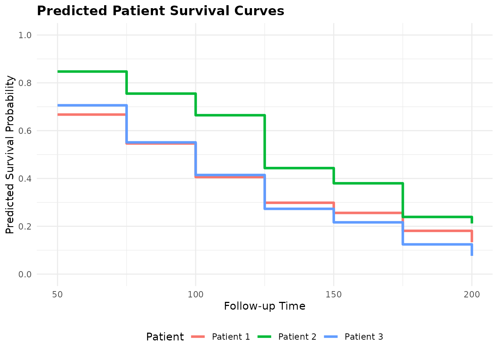
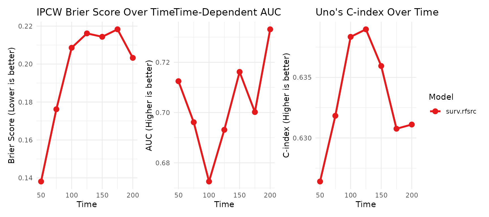
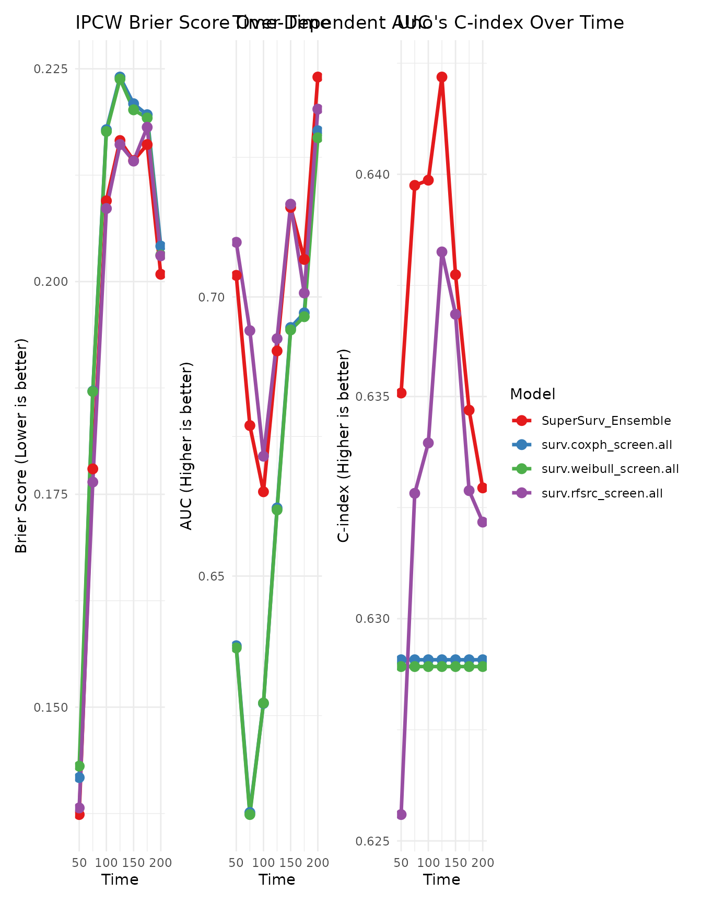

6. Machine Learning with Random Survival Forests
Source:vignettes/base-learner-rfsrc.Rmd
base-learner-rfsrc.RmdIntroduction
While classical models like the Cox Proportional Hazards model are highly interpretable, they rely on strict assumptions of linear, additive effects. Random Survival Forests (RSF) overcome this by building a non-linear ensemble of decision trees.
In this tutorial, we will demonstrate how to run a standalone RSF
using SuperSurv’s unified wrappers, evaluate its individual
performance, and finally include it in a Super Learner ensemble.
1. Prepare the Data
library(SuperSurv)
library(survival)
data("metabric", package = "SuperSurv")
set.seed(123)
train_idx <- sample(1:nrow(metabric), 0.7 * nrow(metabric))
train <- metabric[train_idx, ]
test <- metabric[-train_idx, ]
X_tr <- train[, grep("^x", names(metabric))]
X_te <- test[, grep("^x", names(metabric))]
new.times <- seq(50, 200, by = 25) 2. Standalone Machine Learning
SuperSurv provides unified wrappers that automatically
handle the training and standardization of survival probabilities. You
can use these completely independent of the Super Learner ensemble.
# 1. Fit the standalone wrapper
rf_standalone <- surv.rfsrc(
time = train$duration,
event = train$event,
X = X_tr,
new.times = new.times
)
# 2. Extract the fitted model object and prediction matrix
rf_fit <- rf_standalone$fit
rf_pred_matrix <- rf_standalone$predBecause our plotting functions are universally compatible, we can plot individual patient curves directly from this standalone matrix:
# Plot the first 3 patients in our training set
plot_predict(preds = rf_pred_matrix, eval_times = new.times, patient_idx = 1:3)
3. Evaluating the Standalone Model
We can also pass this standalone model directly into our evaluation suite to test its performance on new data.
# The function automatically detects this is a single model and plots it!
plot_benchmark(
object = rf_fit,
newdata = X_te,
time = test$duration,
event = test$event,
eval_times = new.times
)
# plot_calibration(
# object = rf_fit,
# newdata = X_te,
# time = test$duration,
# event = test$event,
# eval_time = 150,
# bins = 2
# )4. Train the Benchmark Ensemble
While the standalone RSF is powerful, we can objectively evaluate if
it outperforms classical models by putting them together in a
SuperSurv ensemble.
my_library <- c("surv.coxph", "surv.weibull", "surv.rfsrc")
fit_supersurv <- SuperSurv(
time = train$duration,
event = train$event,
X = X_tr,
newdata = X_te,
new.times = new.times,
event.library = my_library,
cens.library = c("surv.coxph"),
control = list(saveFitLibrary = TRUE),
verbose = FALSE,
nFolds = 3
)5. Visualizing Ensemble vs. Base Learners
When we pass the SuperSurv ensemble into the exact same
benchmark function, it automatically unpacks the library and plots the
ensemble against all its constituent models.
plot_benchmark(
object = fit_supersurv,
newdata = X_te,
time = test$duration,
event = test$event,
eval_times = new.times
)
By incorporating advanced machine learning algorithms into your
library, SuperSurv mathematically guarantees that your
final predictions adapt to the complexity of your data, achieving the
lowest possible Brier Score.